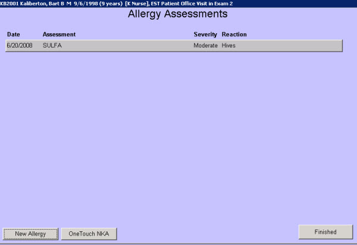

|
Description
This screen displays any allergies reported by the patient (or parent/guardian). Allergies can be drug, food, environmental, etc. The severity and reaction can be documented for each allergy.
For established patients, the clinical staff should confirm the existing allergies or lack thereof at each visit. The 1-Touch buttons at the bottom of the screen allow the staffer to quickly document that the patient was asked and reported either No New Allergies or No Known Allergies (NKA).
 NOTE: When selecting the NKA button the user will not see any notation on the Allergies screen unless the user selects Review/Edit NKA or Other Options and Review the Quick View or Summary NOTE: When selecting the NKA button the user will not see any notation on the Allergies screen unless the user selects Review/Edit NKA or Other Options and Review the Quick View or Summary
Medication Allergies
When an allergy to a medication is documented on this screen, EncounterPRO displays a red 'A' on all Treatment Lists for any treatments that are contraindicated due to the allergy. This is accomplished by configuring the allergy assessment with a list of Reactive Drugs. When a new drug is added to the database, the configuration user needs to also add that drug to any applicable allergy assessments.
How to Access This Screen
Access this screen by:
- Selecting the Allergies/No Allergies button from the Patient Chart screen
- Selecting the Allergies/No Allergies button from the Vitals screen
Screen Elements

Want to Learn More?
Related Solutions
Screen: Vitals
Screen: Patient Chart
How to: Document Patient-reported Allergies
Screen: Select Allergy Assessment
|